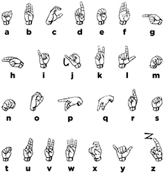
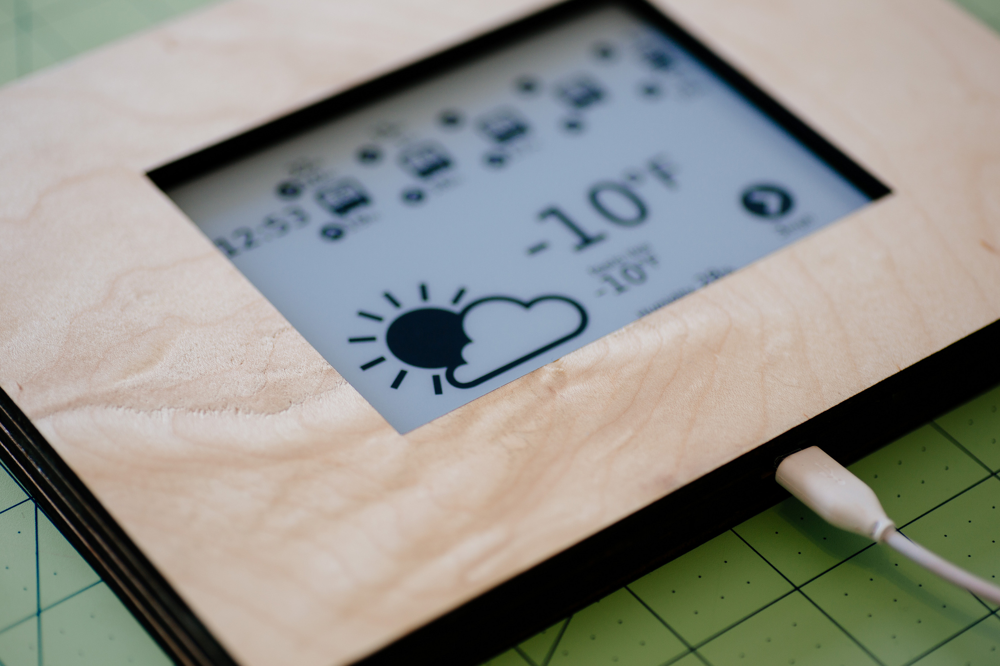

Jonathan Keane
I am a postdoctoral scholar at the Center for Sign, Gesture, and Language at the University of Chicago. Previously, I worked as a research assistant in the Sign Language Linguistics Lab as well as the Chicago Language Modeling Lab. I have many research interests, particularly articulatory phonetics and phonology, morphology, and computational approaches to each. I am currently working on projects involving sign language phonetics and phonology, how perception and action influence gesture, and how gesture and sign languages interact.
Broadly speaking, I'm interested in how humans use their bodies to communicate both linguistically and non-linguistically. My primary focus is on how signers (people who use sign languages) use their body, arms, and hands in linguistic systems. How are the infinite number of possible configurations for a given articulator divided into meaningful groups (ie phonological units)? How much variation is allowed within these groups? What are the factors that contribute to this variation?
Since the fall of 2009, I've been working with a research group consisting of researchers who specialize in linguistics, speech and language processing, and computer vision, with the goal of developing automated sign language recognition tools. This collaboration fostered my interest in the phonetics of sign languages. I hope to continue to develop models and tools that contribute both to our knowledge of phonetics generally, and inform automatic recognizers of fingerspelling.
Research
For a current list of my publications please see my publications.
American Sign Language (asl) fingerspelling
Fingerspelling is used anywhere from 12 to 35 percent of the time in asl, (Padden and Gunsauls, 2003) and as such should not be set aside as extralinguistic. There has only been a small amount of information put together on the phonetics of fingerspelling. The only work on fingerspelling phonetics explicitly that I've found is (Wilcox 1992) as well as (Tyrone et al. 1999).
I'm especially interested in how contextual variation can be modeled based on linguistic (eg articulator activation, phonological features) as well as non-linguistic (eg physiological) factors. To test theories of this variation (as well as others about phonetics, phonology, and their interface), I study how signers produce asl fingerspelling. Studying fingerspelling provides opportunities to find contextual and time-conditioned variation in handshape that are relatively limited in signing. This work builds on phonological systems of sign language production, but with a detailed focus on the specific aspects that make up handshapes in asl.
My current work continues to explore fingerspelling production. I am continuing to model handshape and temporal variation that was the focus of my dissertation. I'm also involved in projects that look at how native signers as well as second language learners perceive and comprehend fingerspelling, and especially what factors contribute to successful fingerspelling comprehension; in projects that look at how handshape similarity can be quantified and tested.
I use a variety of methods including annotated video data and instrumented capture to generate large, robust, quantitative sets of data. Similar methods have a (relatively) long tradition in spoken language linguistics, however they are only beginning to be used to look at signed languages. My work is supported in part by nsf bcs 1251807.
Dissertation project
My dissertation (defended August, 2014) develops an articulatory phonology model (for more information, see the more detailed description below) linking the phonology and phonetics of handshapes in American Sign Language (asl), which was validated against data on handshape variation. On top of handshape variation, my dissertation includes detailed analyses of temporal information of the fingerspelling of native asl signers.
Sign, Gesture, and Language
I have been involved with projects with the Center for Sign, Gesture, and Language at the University of Chicago since its founding. I am currently involved with a few projects with other researchers that test the interface of gesture, action, perception, and sign languages.
Software
Some interesting, and hopefully helpful tools for others.
Pyelan
I've developed pyelan, a python module that allows for eas[y | ier] extraction and manipulation of annotation data from elan files. Although this is a work in progress, some core functionality has been implemented. Pyelan can read, write, and preform some manipulations of eaf files. Pyelan now also allows for linking csv files to be viewed in the timeseries viewer. Please feel free to use, fork, submit issues, and submit pull requests.
PhaseSpaceHelper for PhaseSpace motion capture systems
PhaseSpaceHelper is a python module that contains some convenience functions to deal with synchronizing stimulus presentation and data collection (through smpte timecode), as well as verifying the accuracy of calibration given a set object. Warning: this is very much in active development right now.
The Articulatory Model of Handshape
For my dissertation, I implemented a computational model of the phonetics-phonology interface, that I call the Articulatory Model of Handshape. The implementation is as the amohs python module. This module not only implements automatic translation from phonological features to various types of phonetic representations (including joint angle targets), but it also uses an external library to render 3d images of hands.
The Articulatory Model of Handshape uses a slightly modified version of Brentari's 1998 Prosodic Model of handshape for a phonological representation of handshape. It than provides representations for phonetic specifications either as tract variables (at a categorical level), and as phonetic joint angle targets (a continuous level) for handshapes. Using these representations, comparisons between handshapes can be made deriving a theory-driven metric of handshape similarity.
On top of the computational implementation described above, the module uses an external library, LibHand to render images of synthesized handshapes. Currently, the model only renders isolated handshapes, but in the future could be extended to sequences of handshapes (including transitions), that is, video of handshapes moving over time. Because they are based on representations that can be linked to multiple levels of phonetics and phonology, these videos could include information about coarticulation (contextual dependencies) of the kind that was demonstrated in my dissertation.
At the time that I was trying, LibHand failed to compile on modern versions of OS X. I have setup a repository that includes the changes needed to compile LibHand on OS X 10.9 Mavericks. Compiling via homebrew is possible, with some alterations to ogre as well.
SLGloss LaTeX package
In collaboration with Itamar Kastner, I've helped developed the SLGloss LaTeX package to make it easier to typeset sign language glosses. It has three main features:
- It typesets sign glosses in smallcaps to integrate typographically with surrounding text, as well as allows for non-manual markings over specific constituents.
- It typesets fingerspelled words in small caps with hyphens between the letters
- It typesets lists of individual fingerspelled letters with hyphens on either side.
Fflipper
I've developed fflipper, a python module that allows for extraction of clipped videos based on the annotations extracted from an elan file.
asl fingerspelling chart
After seeing many charts that were licensed and reproduced with permission, I decided to recreate a fingerspelling chart and release it using a very liberal content license so researchers and educators that need this chart can use it (nearly) freely. The handshapes are based on the font from David Rakowski.
There a few problems with this chart. The biggest problem is that the orientation of many letters is altered to show the configuration of the fingers. In reality, all of the handshapes are made with the palming facing out, away from the signer with the exception of -g- (in, towards the signer), -h- (in, towards the signer), -p- (down), -q- (down) and the end of -j- (to the side)
Download the full sized, completely vector-based PDF version.

This work is licensed under a Creative Commons Attribution-ShareAlike 3.0 Unported License.
Better type for LaTeX
In the pursuit of better typography for LaTeX I've found a couple of good walkthroughs, and a couple of invaluable tools. All of the following have been tested on TeX Live 2009, 2010, and 2011 on both OS X 10.5, 10.6, and 10.7.
Minion Pro
I've created a bash script that installs Minion Pro to a local TeX Live tree with very little user intervention.
otfinst.py
John Owens has developed a great python tool that installs many OpenType fonts. The only stumbling block I found besides some font incompatibilities was assigning (making up) Berry names to the fonts that I wanted to install, which have to be added to the script. I have made up names for the following that seem to adhere most of the conventions. If anyone knows of more widespread names for these typefaces, please let me know.
- 'Neutraface Text' : 'fne'
- 'Neutraface Display' : 'fn3'
- 'Gotham' : 'fg7'
- 'Gotham Rounded' : 'fg8'
Hardware
I dabble in hardware development (really, mostly hacking existing products to do things I find useful).
Button board
Through the process of collecting various kinds of psycholinguistic data, I found the need to have a versatile, inexpensive feedback system for participants to use in order to interact with a computer during the course of an experiment. Although button boxes exist already, they are typically very expensive, and not of the form factor we desired for use in experiments.
To solve this, I developed a button board based on a Teensy 2.0 microcontroler and a in conjunction with momentary switch (e.g. Infogrip's Specs Switch). The microcontroller is flexible enough to provide the computer with virtually any type of usb input possible when one of up to 4 buttons are pressed.
Kindle weather and cta arrival times display
After seeing a number of people make various persistent display devices with kindles, I decided that what I really needed was a display for weather as well as various cta arrival times near my apartment.
I developed a setup that grabs weather from wunderground or forecast.io, as well as arrival times for a limited number (5 currently, due to space restrictions of the kindle) of cta stops and stations. Then displays the arrivals persistently, and cycles through: current weather conditions, a 12 hour forecast, and a 5 day forecast.
Not content to just tack a kindle on the wall, I built a wood frame using a laser cutter to house the kindle and reroute the usb cable for charging.
